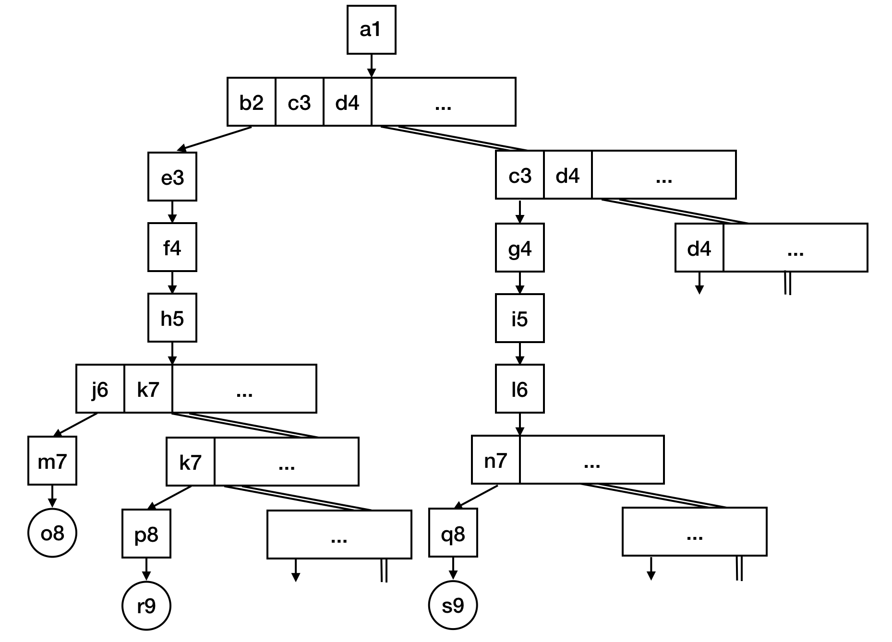

5Egisonパターンマッチの仕組み
本章は，Egison内部のパターンマッチの仕組みを解説する． まず，5.1節で概略を説明する． 5.2節以降では，Egisonパターンマッチを自身で実装するために必要な事項を解説する． 単にEgisonの使い方を知りたい読者は，5.2節以降を読み飛ばして第6章に進んでも構わない．
5.1パターンマッチ・アルゴリズムの概略
以下のmatchAll式を実行したときにどのような処理がなされるのかみていくことにより，Egison内部のパターンマッチ・アルゴリズムの概略をつかむ．
matchAll [2,8,2] as multiset eq with
| $m :: #m :: _ -> m
-- [2,2]上記のmatchAll式を受け取るとEgison処理系は，以下のようなマッチング・ステート（matching state）と呼ばれるオブジェクトを処理系内部で生成する． マッチング・ステートは，マッチング・アトム（matching atom）のスタックと，パターンマッチの途中結果（下記の場合，[]），matchAll式実行時の環境（下記の場合，env）からなる． マッチング・アトムは，パターン，マッチャー，ターゲットからなる3つ組である． 初期マッチング・ステートは，matchAll式のパターン，マッチャー，ターゲットから構成されるマッチング・アトム1つからなるスタックから構成される． Egison内部のパターンマッチ・アルゴリズムは，マッチング・ステートの簡約プロセスとして定義されている． 簡約の結果，マッチング・アトムのスタックが空になるとパターンマッチに成功する．
MState [($m :: #m :: _, multiset eq, [2,8,2])]
[] envこのマッチング・ステートは，次のステップで以下の3つのマッチング・ステートに簡約される． この簡約はmultisetマッチャーのコンス・パターンの定義（第6章6.4節にて解説する）にもとづいて実行される．
MState [($m, eq, 2)
,(#m :: _, multiset eq, [8,2])]
[] env
MState [($m, eq, 8)
,(#m :: _, multiset eq, [2,2])]
[] env
MState [($m, eq, 2)
,(#m :: _, multiset eq, [2,8])]
[] envこのように1つのマッチング・ステートを1ステップ簡約すると複数のマッチング・ステートが生成される． 生成されるマッチング・ステートの数が0個であることも，無限個ある場合もある． これらのマッチング・ステートがどのような順番で簡約されるのかは，5.2節で論じる． ここでは，1つ目のマッチング・ステートの簡約をみる． 1つ目のマッチング・ステートは，次のステップで以下のように簡約される． スタックの先頭のマッチング・アトムのマッチャーがeqからsomethingに変わる． この簡約は，eqマッチャーに定義されている．（第6章6.3節でその定義をみる．）
MState [($m, something, 2)
,(#m :: _, multiset eq, [8,2])]
[] envsomethingはEgison唯一の組み込みマッチャーであり，パターンマッチの途中結果に新しい束縛を追加することができる． ここでは，変数mに2を束縛している．
MState [(#m :: _, multiset eq, [8,2])]
[(m, 2)] env再び，multisetのコンス・パターンの定義にもとづき，マッチング・ステートが簡約される．
MState [(#m, eq, 8)
,(_, multiset eq, [2])]
[(m, 2)] env
MState [(#m, eq, 2)
,(_, multiset eq, [8])]
[(m, 2)] env上記，1つ目のマッチング・ステートは値パターン#mのパターンマッチに失敗して消える．（簡約された結果0個のマッチング・ステートを生成するともいうことができる．） 2つ目のマッチング・ステートは，先頭のマッチング・アトムが解決されて以下のようになる．
MState [(_, multiset eq, [8])]
[(m, 2)] envこのマッチング・ステートも，先頭のマッチング・アトムが解決されて以下のようになる．
MState []
[(m, 2)] env最終的にマッチング・アトムのスタックが上記のように空になると，このパターンマッチの途中結果が最終結果としてボディの評価に使われる．
5.2matchAll・matchAllDFSによる探索木のトラバース
本節では，matchAll式とmatchAllDFS式を実行したときに内部でどのような探索木がトラバースされるのかを解説する． ある1つのマッチング・ステートを簡約すると0個から無限個までを含む複数のマッチング・ステートが生成される． そのため，Egisonの内部のパターンマッチ・アルゴリズムは，初期マッチング・ステートを根とする木の探索と考えることができる．
まずは，以下のようなmatchAllDFS式の探索木をみる．
take 8 (matchAllDFS [1..] as set integer with
| $m :: $n :: _ -> (m, n))
-- [(1, 1), (1, 2), (1, 3), (1, 4), (1, 5), (1, 6), (1, 7), (1, 8)]このmatchAllDFS式の探索木は図5.2のようになる． 図中の四角は，1つのマッチング・ステートを表現している． 図中の丸は，マッチング・アトムのスタックが空になったマッチング・ステート，パターンマッチの最終結果を表現している．

matchAllDFS式の探索木
matchAllDFS式はこの探索木を深さ優先探索する．
そのため，マッチング・ステートは，a1，b2，e3，f4，h5，j6，m7，o8，k7，p8，r9，...という順番で簡約されていく． マッチング・ステートh5は無限個のマッチング・ステート（j6，k7，...）に簡約される． そのため，深さ優先探索では，マッチング・ステートc3の簡約に行き着くことがない． このようにmatchAllDFSでは，すべてのマッチング・ステートをたどれず，可算無限のパターンマッチ結果をすべて列挙できない場合がある．
matchAll式は，可算無限のパターンマッチ結果をすべて列挙するために，この探索木に変形を加えて幅優先探索をおこなう． 図5.2は，下記のmatchAll式を実行したときの探索木である．
take 8 (matchAll [1..] as set integer with
| $m :: $n :: _ -> (m, n))
-- [(1, 1), (1, 2), (2, 1), (1, 3), (2, 2), (3, 1), (1, 4), (2, 3)]
matchAll式の探索木
図5.2の探索木については，1つのマッチング・ステートが1つのノードをあらわしていたが，図5.2の探索木については，一連なりのマッチング・ステートのリストを1つのノードとする． たとえば，a1は1つのマッチング・ステートからなるノード，b2，c3，d4，...は無限個のマッチング・ステートからなる1つのノードである． このように探索木をとらえると，この探索木は二分木になっている． 探索木が二分木であるため，すべてのノードの子が有限であるため，幅優先探索をすれば，すべてのノードをたどることができる．
図5.2の探索木を斜めにとらえることによって，図5.2の二分木への変形はできる． b2，c3，d4，...からなるノードに注目しよう． このノードの子は，e3単独からなるノードと，c3，d4，...からなるノードである． 一般に，あるノードの子は，そのノードの先頭のマッチング・ステートを簡約した結果と，そのノードの先頭の要素を取り除いたマッチング・ステートのリストとなる．
5.3andパターン・orパターン・notパターンの実装
本節では，組み込みパターンの実装の例として，andパターン・orパターン・notパターン（第2章2.6節）の実装を説明する．
andパターンの実装からみていく． 以下のようなandパターンを含むパターンマッチを考える．
matchAll [1, 2, 3] as list integer with
| $n :: (_ :: _ & $rs) -> (n, rs)
-- [(1, [2, 3])]このパターンマッチを処理する過程で，以下のようなマッチング・ステートの簡約にいきつく．
MState [(_ :: _ & $rs, [2, 3], list integer)]
[(n, 1)] envスタックの先頭のマッチング・アトムのパターンがandパターンであった場合，Egison処理系は以下のように簡約する．
MState [(_ :: _, [2, 3], list integer)
,($rs, [2, 3], list integer)]
[(n, 1)] envandパターンのそれぞれの引数について，同じターゲットとマッチャーからつくったマッチング・アトムがスタックに追加される．
次にorパターンの実装をみる． 以下のようなorパターンを含むパターンマッチを考える．
matchAll [1, 1, 2] as list integer with
| $m :: ([] | #m :: _) -> m
-- [1]このパターンマッチを処理する過程で，以下のようなマッチング・ステートの簡約にいきつく．
MState [(([] | #m :: _), [1, 2], list integer)]
[(m, 1)] envスタックの先頭のマッチング・アトムのパターンがorパターンであった場合，Egison処理系は以下のように簡約する．
MState [([], [1, 2], list integer)]
[(m, 1)]
MState [(#m :: _, [1, 2], list integer)]
[(m, 1)] envorパターンのそれぞれの引数について，同じターゲットとマッチャーからつくったマッチング・アトムをスタックの先頭にもつマッチング・ステートを生成する．
最後にnotパターンの実装をみる． 以下のようなnotパターンを含むパターンマッチを考える．
matchAll [2, 8, 2] as multiset integer with
| $m :: (!(#m :: _) & $rs) -> (m, rs)
-- [(8, [2,2])]このパターンマッチを処理する過程で，以下のようなマッチング・ステートの簡約にいきつく．
MState [(!(#m :: _), [2, 2], multiset integer)
,($rs, [2, 2], multiset integer)]
[(m, 8)] envスタックの先頭のマッチング・アトムのパターンがnotパターンであった場合，Egison処理系は以下のように，スタックの先頭のマッチング・アトムからnotパターンのnotをのぞいたマッチング・アトムだけをスタックにもつマッチング・ステートを生成する．
MState [((#m :: _), [2, 2], multiset integer)
[(m, 8)] envこのマッチング・ステートの簡約した結果，1つもパターンマッチに成功するマッチング・ステートがなければ，以下のような先ほどのマッチング・ステートからnotパターンをもつ先頭のマッチング・アトムをのぞいたマッチング・ステートを簡約する．
MState [($rs, [2, 2], multiset integer)]
[(m, 8)] env5.4パターン関数の実装
本節は，パターン関数の実装を解説する． 以下のようなパターン関数の適用を含むパターンマッチを考える．
def twin := \p1 p2 => (~p1 & $x) :: #x :: ~p2
matchAll [1, 2, 1, 3] as multiset integer with
| $m :: twin $n _ -> (m, n)
-- [(2, 1), (2, 1), (3, 1), (3, 1)]このパターンマッチを処理する過程で，以下のようなマッチング・ステートの簡約にいきつく．
MState [(twin $n _, [1, 1, 3], multiset integer)]
[(m, 2)]このようにスタックの先頭のマッチング・アトムのパターンが，パターン関数の適用であった場合，パターン関数が展開される． この展開と同時に，MNodeというほとんどMStateと同じ構造のデータにマッチング・アトムは変換される． MNodeは，パターンマッチの途中結果（下記の場合，[]）と，パターン関数を定義したときの環境（下記の場合，env1），パターン関数の引数に束縛されたパターンの環境（下記の場合，[(p1, $n), (p2, _)]）をもつ． このようにMStateがネストしたような構造をつくるのは，パターンの静的スコープを実現するためである．
MState [MNode [(~p1 & $x) :: #x :: ~p2, [1, 1, 3], multiset integer)]
[]
env1
[(p1, $n), (p2, _)]]
[(m, 2)] envこのマッチング・ステートを簡約していくと，スタックの先頭のパターンがパターン関数の仮引数（下記の場合，p1）であるマッチング・ステートにいきつく．
MState [MNode [(p1, 1, integer),
(#x :: ~p2, [1, 3], multiset integer)]
[(x, 1)]
env1
[(p1, $n), (p2, _)]]
[(m, 2)] envパターン関数の引数に束縛されたパターンの環境（MNodeの3つ目の引数）からp1に束縛されているパターンを取り出し，マッチング・アトムのパターンをそのパターンに展開する． 同時に，このマッチング・アトムをMNodeからMStateのマッチング・アトムに持ち上げる．
MState [($n, 1, integer),
MNode [(#x :: ~p2, [1, 3], multiset integer)]
[(x, 1)]
env1
[(p1, $n), (p2, _)]]
[(m, 2)] env%
%matchAll [1..4] as multiset integer with
%| $a_1 ::
% (loop $i (2, 4)
% ((loop $j (1, i - 1)
% (!#(a_j - (i - j)) & !#(a_j + (i - j)) & ...)
% $a_i) :: ...)
% []
%-> map (\i -> a_i) [1..4]
%%
%MState []
% [($a_1 ::
% (loop $i (2, 4)
% ((loop $j (1, i - 1)
% (!#(a_j - (i - j)) & !#(a_j + (i - j)) & ...)
% $a_i) :: ...)
% []]
% ,multiset integer, [1,2,3,4])]
% [] env
%%
%MState []
% [($a_1, something, 2)
% ,((loop $i (2, 4)
% ((loop $j (1, i - 1)
% (!#(a_j - (i - j)) & !#(a_j + (i - j)) & ...)
% $a_i) :: ...)
% []]
% ,multiset integer, [1,3,4])]
% [] env
%%
%MState []
% [((loop $i (2, 4)
% ((loop $j (1, i - 1)
% (!#(a_j - (i - j)) & !#(a_j + (i - j)) & ...)
% $a_i) :: ...)
% []]
% ,multiset integer, [1,3,4])]
% [(a, {|[1, 2]|})] env
%%
%MState [((i, 2), [4], _, ((loop $j (1, i - 1)
% (!#(a_j - (i - j)) & !#(a_j + (i - j)) & ...)
% $a_i) :: ...), [])]
% [((loop $i (2, 4)
% ((loop $j (1, i - 1)
% (!#(a_j - (i - j)) & !#(a_j + (i - j)) & ...)
% $a_i) :: ...)
% []]
% ,multiset integer, [1,3,4])]
% [(a, {|[1, 2]|})] env
%